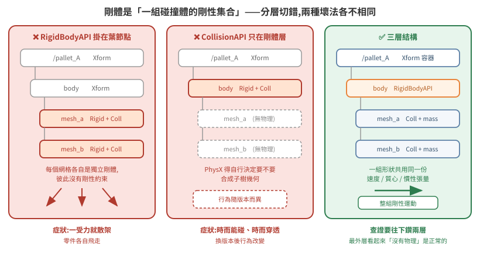

場景資產的物理結構:剛體分層、質量配置與材質綁定
04 篇講怎麼把場景變成能跑物理的世界,09 篇講物理引擎內部怎麼算。本篇處理兩者之間那一層:同樣是「加了 RigidBody 和 Collider」的場景,為什麼有的能穩定夾持搬運,有的一轉彎就滑掉、一叉就散架。
差別幾乎全在 prim 階層怎麼切、質量怎麼配、以及物理材質有沒有真的綁上去。這三件事的共同特徵是:設錯不會報錯,只會在動力學行為上表現成一堆看似無關的症狀。
官方文件:OpenUSD UsdShadeMaterialBindingAPI、UsdShade Material Assignment 白皮書、UsdPhysics schema、Rigid Body Physics in USD 提案。本篇的機制敘述兩版通用;貼出的 API 名稱以 Isaac Sim 4.5–5.1.x 為準(6.0 的命名空間變動見 版本速查表)。
1. 根本問題:剛體不是「一個物件」,是「一組碰撞體的剛性集合」
新手直覺是「一個物件 = 一個 prim = 加 RigidBody + Collider」。這個直覺在單一方塊上成立,一旦物件由多個網格組成就立刻崩潰。
從第一性原理看:PhysX 求解的對象是剛體——一個有質量、質心、慣性張量、單一速度與角速度的動力學單位。碰撞偵測的對象是碰撞形狀(convex hull、SDF mesh…),而一個剛體允許掛多個碰撞形狀。這兩件事在數學上就是分開的:速度積分作用在剛體上,接觸約束作用在形狀上。
USD 於是把它表達成階層:RigidBodyAPI 掛在父節點,CollisionAPI 掛在子網格。父子關係在這裡不是組織上的方便,而是「這些形狀共用同一組動力學狀態」的宣告。
由此可以直接推出兩個錯誤各自會怎麼壞:
| 錯法 | 為什麼壞 | 症狀 |
|---|---|---|
| RigidBodyAPI 掛在每個葉網格上 | 每個網格變成獨立剛體,彼此沒有剛性約束 | 一被外力作用就散架,零件各自飛走 |
| CollisionAPI 只掛在剛體那層 | PhysX 得自行決定要不要合成子樹幾何,行為隨版本而異 | 有時能碰、有時穿透,換版本後行為改變 |
所以可搬運物件的標準結構是三層:

/pallet_A Rigid=False Coll=False ← 純 Xform,只放位姿
└── /pallet_A/body Rigid=True Coll=False ← RigidBodyAPI 在這層
├── pallet_mesh Rigid=False Coll=True mass=20.0
├── cargo_box Rigid=False Coll=True mass=20.0
└── Looks Rigid=False Coll=False ← 外觀材質
三層各自的職責:
- 最外層 Xform —— 場景組裝用的容器,只有 transform。外部程式(重置、擺位腳本)動的是這層。
- 中間層 RigidBodyAPI —— PhysX 眼中的一個剛體。動力學積分、質心、速度掛在這層。
- 葉層 CollisionAPI + MassAPI —— 實際參與碰撞偵測的幾何,各自帶質量,PhysX 合成出總質量與慣性張量。
這對「查證」的直接含意
查一個物件「有沒有物理」時,只看你在 Stage 樹上點到的那一個 prim 一定會誤判。上面範例的 /pallet_A 是 Rigid=False Coll=False,看起來像完全沒設物理,真正的設定在下面兩層。
至少往下鑽兩層,而且最好寫成一支 dump 指令,一次印出整棵子樹的 Rigid / Coll / mass。這件事值得自動化的原因不是省時間,是人工逐層點選時很容易在第一層就下結論。
同一場景可能兩種寫法並存
/World/forklift Rigid=False Coll=False
└── main/
├── fork_lift Rigid=True Coll=True mass=50.0 ← 剛體與碰撞同層
└── fork_tilt Rigid=True Coll=False mass=100.0 ← 分層
├── fork_tilt_geom Rigid=False Coll=True
└── camera_link Rigid=False Coll=False ← 無物理
承重的叉齒是剛體與碰撞同層(單一網格,合法),傾斜架則是分層。同一台機構上兩種寫法並存,通常是模型從 CAD 分批轉檔留下的差異。這不是錯誤,但查設定時不能假設整個場景風格一致。
至於感測器掛載點沒有任何物理 API——這是正確的。感測器 frame 是座標參考,不該參與碰撞。
2. 質量比:叉取穩定性的隱藏參數
實測值:
| Prim | mass |
|---|---|
| 叉齒 | 50.0 kg |
| 傾斜架 | 100.0 kg |
| 被搬物本體 | 20.0 kg |
| 被搬物上方貨物 | 20.0 kg |
為什麼質量比重要,可以從接觸求解的角度看:solver 是疊代的(見 09 篇 §5),每次疊代都在修正約束違反量。當兩個接觸物體的質量同量級時,一方的修正會顯著推動另一方,下一次疊代又要反過來修正——在有限疊代次數內收斂得慢,表現為互推震盪。質量差距拉開後,重的一方近似不動,輕的一方單向收斂,穩定得多。
實測配置是叉齒 50 kg 對被搬物 20 kg(2.5:1),配合高摩擦材質可穩定夾持。
症狀對照:被搬物質量調到與機構同量級以上、摩擦又沒跟著提高,典型表現是「叉起來了,但一轉彎就滑掉」。這時候去調 solver 疊代次數通常只能緩解,調質量比與摩擦才是治本。
3. 物理材質:USD 的 purpose 機制,以及它為什麼會騙你
根本問題:一個 prim 上會綁不只一種材質
USD 的材質綁定不是單一插槽。同一個 prim 可以同時綁「渲染用的外觀材質」與「物理用的摩擦/彈性材質」,兩者透過 material purpose 區分。這個設計是必要的:視覺與物理是兩套完全獨立的屬性,一個橡膠外觀的物件在物理上可能被刻意設成無摩擦。
UsdShade 白皮書把 full(最高保真的最終算圖)與 preview(服務於操作、建模、即時播放)訂為 canonical 值,加上 fallback 的 allPurpose(空 token),並明文「We see no reason to limit the possible purposes」——purpose 是可擴充的。UsdPhysics 正是用了這個擴充點(逐字):
USD Physics materials are bound in the same way as graphics materials using UsdShadeMaterialBindingAPI, either wih no material purpose or with a specific "physics" purpose.
(原文的 wih typo 保留。)對應到 usda 就是 rel material:binding:physics = </World/Looks/RegularMaterial>。
UsdShade.MaterialBindingAPI(prim).ComputeBoundMaterial(purpose) 是「解析出這個 purpose 下實際生效的材質」的官方入口。Python 版與 C++ 版的回傳不同,官方明文:
The python version of this method returns a tuple containing the bound material and the "winning" binding relationship.
⚠
MaterialBindingAPI.GetMaterialPurposes()官方只寫「Returns a vector of the possible values for the 'material purpose'」,沒有逐字列舉內容。要知道當前 USD 版本認哪些值,呼叫它印出來,不要憑印象寫死一份清單。
陷阱:它幾乎不會回 None
這裡是最容易誤判的地方,而且它是官方解析規則的直接後果,不是實作 bug。官方對材質解析的第 3 條規則寫得很清楚(逐字):
The purpose of the resolved material binding must either match the requested special (i.e. restricted) purpose or be an all-purpose binding. The restricted purpose binding, if available is preferred over an all-purpose binding.
也就是:查詢 physics purpose 時,若該 prim 上沒有綁物理材質,解析會合法地退回 allPurpose 的那個渲染材質——你拿到一個非 None 的結果,程式看起來一切正常,但 PhysX 用的是預設摩擦值。
判準不能是「有沒有回傳東西」,必須是「回傳的東西是不是 PhysicsMaterial」:
from pxr import UsdShade, UsdPhysics
mat, _rel = UsdShade.MaterialBindingAPI(prim).ComputeBoundMaterial("physics")
bound = bool(mat) and mat.GetPrim().HasAPI(UsdPhysics.MaterialAPI)
# ^^^^^^^^^^^^^^^^^^^^^^^^^^^^^^^^^^^^^^^^^^^^^^^
# 這一段才是真正的判準
第二個陷阱:綁在 Xform 上完全無效,且不報錯
物理材質只對碰撞形狀有意義——摩擦係數描述的是接觸面的行為,沒有碰撞形狀就沒有接觸面。把材質綁在中間的 Xform 或剛體層上,USD 會老實記錄這個綁定關係,PhysX 則完全不理會。
所以補綁時的篩選條件必須包含 HasAPI(UsdPhysics.CollisionAPI):
for p in stage.Traverse():
if not p.HasAPI(UsdPhysics.CollisionAPI):
continue # 沒有碰撞形狀,綁了也沒用
UsdShade.MaterialBindingAPI(p).Bind(
phys_material,
bindingStrength=UsdShade.Tokens.weakerThanDescendants,
materialPurpose="physics",
)
weakerThanDescendants 的用意:子層若有刻意設定的材質(例如某個面故意設成低摩擦),不要被這次批次補綁壓掉。批次操作預設應該是弱綁定——你在補一個缺失,不是在宣告權威。
4. 執行期補綁是診斷工具,不是交付方式
執行期(startup 腳本裡)補綁物理材質很方便,而且在診斷階段極有價值:改一行、重啟、看行為變化,不必動模型檔、不必等建模者。實測上把承載面補綁高摩擦材質後,被搬物的側向偏移從 9.3 cm 降到 1 cm 以內。
但它有三個必須寫下來的邊界:
- 場景重載會清掉它。任何
open_stage()重載後必須重新套用,所以重置流程的結尾要包含「重新套用執行期物理設定」這一步——這是很容易漏的一步,因為重置後的第一輪通常看起來正常,問題要幾輪後才浮現。 - 它會蓋掉建模者的意圖。若場景物理由建模者負責,執行期覆寫就是在繞過分工。合理做法是預設關閉、以開關啟用,驗證有效後把結果回饋給建模者寫進模型檔。
- 它讓「場景檔」不再是完整事實。之後任何人拿同一份 USD 在別的環境開,行為會不一樣。
摩擦值本身怎麼選,沒有普適答案,但有一條硬約束:staticFriction ≥ dynamicFriction(靜摩擦不小於動摩擦,這是物理事實,反過來設會讓物體「一動就更好動」而震盪)。若數值明顯偏高是為了補償剛體模型缺少的機制(例如沒有建模叉齒表面的凸起防滑結構),把這個理由寫在旁邊——否則下一個人會覺得這個值不合理而「修正」它。
5. 素材、版本與跨機搬運
USD 的外部參照是路徑導向的。跨機搬場景只複製 .usd 主檔一定破圖:
- Collect 產生的整個素材目錄要一起搬,並保持相對位置不變(素材目錄與主檔同層);
- Collect 的 mapping 檔含每個素材的 source/target hash,是現成的完整性驗證工具,不必自建清單。
素材缺失的典型症狀是模型變成單一顏色(通常是紅色)、貼圖全無。判別方式是在啟動 log 中 grep MDL 材質模組缺失訊息(could not find module),不要靠肉眼看畫面猜。
至於版本管理,失控的典型形態長這樣:
scene_600.usd 160 MB
scene_600 (copy).usd 157 MB
scene_600 (another copy).usd 157 MB ← 與上一個位元組數完全相同
scene_full.usd 148 MB
(copy) 是檔案管理器的自動命名,不帶版本語意;相同大小的兩個檔無從判斷新舊,mtime 在複製時已失真。
紀律很簡單:場景檔驗過就凍結,備份以 md5 + 時間戳命名,線上只留一份現行檔。
還有一條值得單獨記:機構行為異常時,第一步驗場景檔 md5,而不是調物理參數。載到舊場景檔會產生所有症狀,而且每個症狀都有看似合理的其他解釋——這種錯誤的診斷成本極高,而驗 md5 只要三秒。
6. 一個路徑陷阱與一個診斷紀律
USD prim 路徑大小寫敏感。曾遇過實際 prim 名為 /ZoneA,而外部對映表與診斷腳本都寫成 /zoneA,查詢一律得到「找不到」,被誤讀成「這個區域的物件不見了」。
對策不是「小心一點」,而是讓診斷指令在找不到時明確印出 NOT FOUND,而不是安靜跳過。沉默的診斷輸出讓你分不清「不存在」與「這段程式碼根本沒跑到」——這兩者的排查方向完全相反。
同理,場景幾何與上層系統(路網、倉儲管理)的儲位是兩套獨立事實,必須有一份明寫的對映表,而且要記錄允許誤差與理由。沒有那行說明,下一個人看到座標差異會誤判成 bug 並開始「修正」一個本來就正確的設定。判定一個既有設定多餘之前,先重建它當初為什麼存在——這條在讀別人的場景檔時特別值得守。
7. 檢查清單
剛體、碰撞與質量
- [ ] 每個可搬物件是「Xform 容器 → RigidBodyAPI → CollisionAPI 葉節點」三層
- [ ] RigidBodyAPI 不掛在葉節點,CollisionAPI 不只掛在剛體層
- [ ] 質量掛在碰撞體層,並確認不是預設值
- [ ] 搬運機構與被搬物質量比拉開(範例 2.5:1)
- [ ] 感測器掛載點沒有任何物理 API
- [ ] 碰撞近似:一般件 convex hull,只有承重面才用 mesh
物理材質(最容易漏)
- [ ]
PhysicsMaterialprim 集中放在固定路徑 - [ ]
staticFriction ≥ dynamicFriction;數值偏高的理由寫下來 - [ ] 對每一個承重接觸面跑
ComputeBoundMaterial("physics") - [ ] 判準是「回傳的是不是
PhysicsMaterial」,不是「有沒有回傳」 - [ ] 補綁篩選含
HasAPI(UsdPhysics.CollisionAPI) - [ ] 補綁用
weakerThanDescendants - [ ] 重置流程結尾重新套用執行期物理設定
- [ ] 驗證通過後回寫模型檔,不長期依賴執行期補綁
素材與版本
- [ ] 素材目錄與主檔同層,整組一起搬
- [ ] 場景檔記錄 md5,備份命名帶 md5 + 時間戳
- [ ] 行為異常時先驗 md5 再調參數